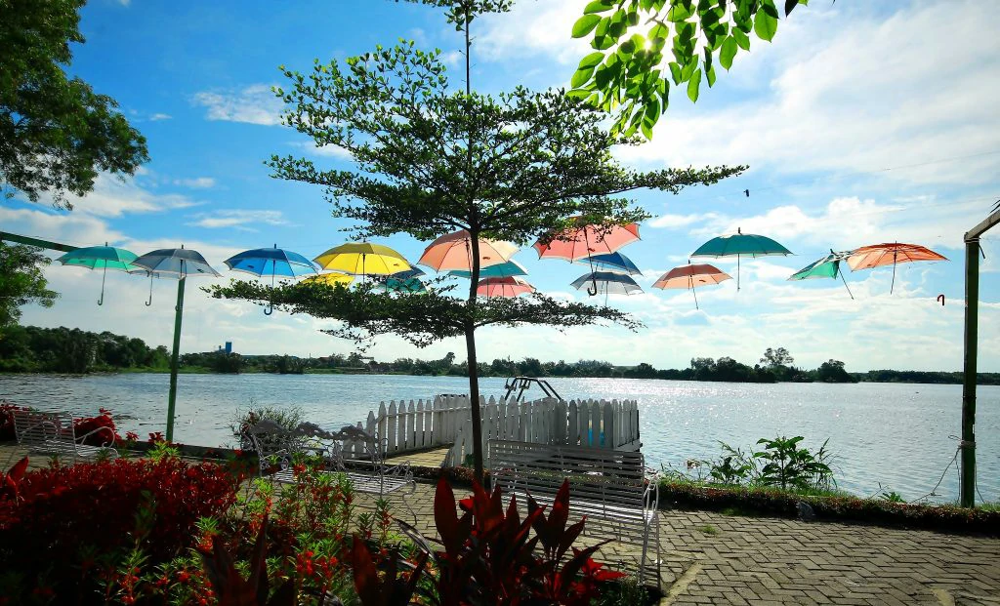
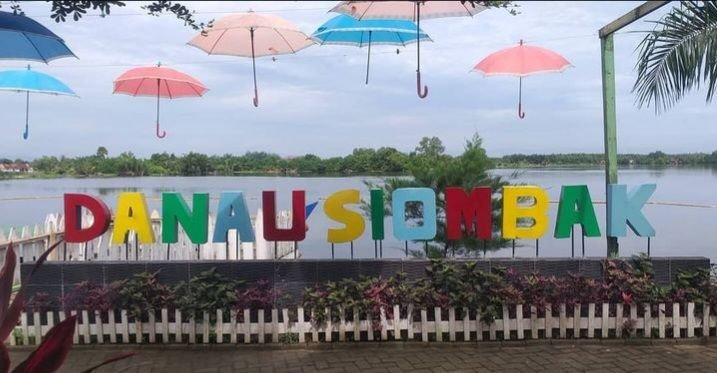

Selamat Datang
Di Wisata Danau Siombak
Nikmati keindahan alam dan suasana tenang

🌿 Wisata Alam Populer
Tentang Danau Siombak
Danau Siombak merupakan destinasi wisata unik di Marelan yang terbentuk dari bekas galian tanah pada tahun 1980. Keindahannya berpadu dengan sejarah menarik yang diyakini berkaitan dengan situs Kota Cina kuno.
Dengan suasana yang tenang, udara sejuk, serta fasilitas lengkap, tempat ini menjadi pilihan favorit untuk wisata keluarga maupun relaksasi.
08.00 - 17.00
Jam OperasionalArea Parkir
Luas & AmanKuliner
Warung LokalAlam Sejuk
Tenang & Nyaman
Pemandangan Danau Siombak

Pemandangan Danau Siombak
Pemandangan Danau Siombak
📍 Lokasi Danau Siombak
Temukan lokasi wisata Danau Siombak dengan mudah melalui peta berikut.